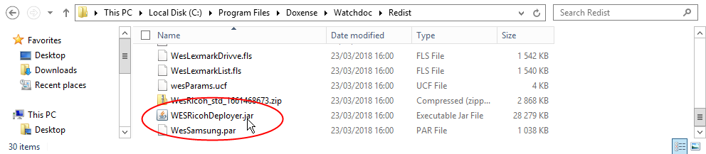
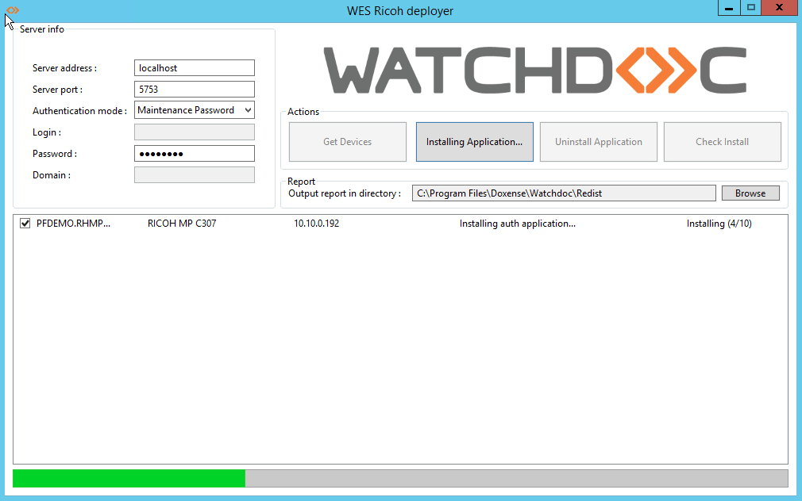
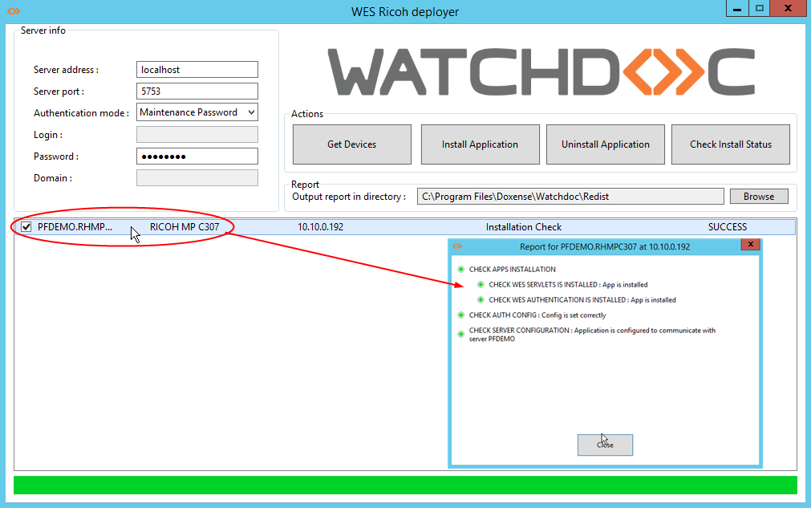
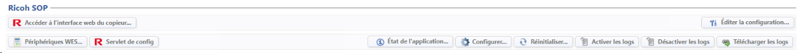
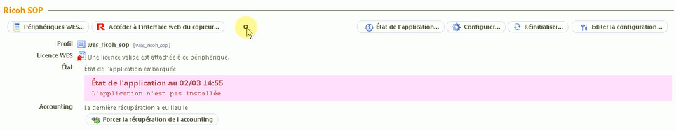
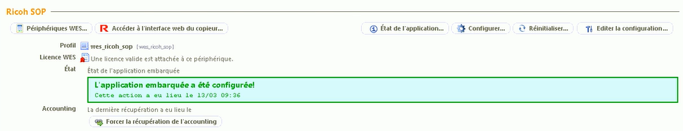
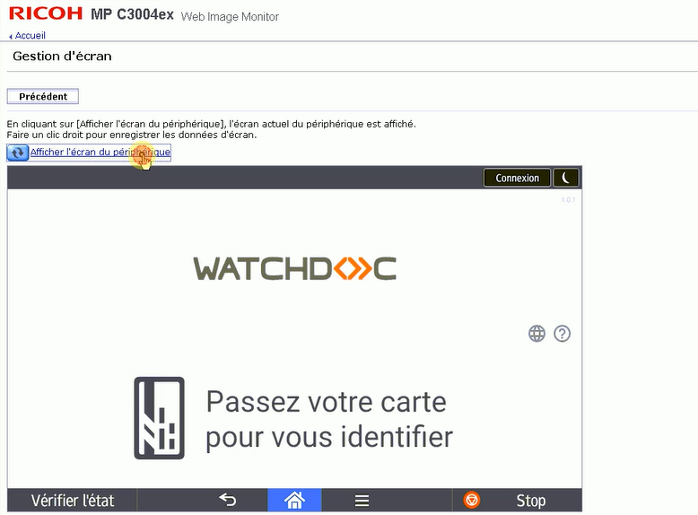

WES Ricoh - Installer le WES sur la file automatiquement
Principe
Le WES Ricoh Smart Operation Panel s'installe à l'aide de l'exécutable WESRicohDeployer.jar fourni par Doxense® sous la forme d'un fichier d'archive JAVA (.jar) enregistré dans le pack d'installation Watchdoc.
Ce fichier peut être lancé depuis le serveur Watchdoc ou depuis tout poste de travail pouvant communiquer en réseau avec le serveur Watchdoc et les périphériques cibles.
Le serveur ou le poste depuis lequel est lancé l'exécutable doivent supporter l'application Java® 8 min.
Pour que WESRicohDeployer puisse fonctionner correctement, il est nécessaire d'utiliser l'une des versions du JRE (Java Runtime Environement) suivantes (restriction Ricoh) :
-
Amazon Corretto v8, v11, v17 ou v19 ;
-
Liberica v19.
Dans le cas où l'installation du WES à l'aide de l'exécutable échoue, vous pouvez recourir à l'installation manuelle, décrite dans le chapitre suivant.
Lancer l'exécutable
N.B. : avant d'installer un WES, vérifiez qu'il n'existe pas déjà ou désinstallez le précédent WES avant d'installer le nouveau.
-
Accédez au serveur Watchdoc en tant qu'administratreur.
-
Rendez-vous dans le dossier C:\Program Files\Doxense\Watchdoc\Redist\
-
Double-cliquez sur ce fichier WESRicohDeployer.jar ;

N.B. : l'application Java 8 sur laquelle repose WESRicohDeployer étant relativement lourde, vous pouvez aussi ne pas l'installer sur le serveur Watchdoc, mais sur un poste de travail communiquant avec le serveur et les périphériques, depuis lequel sera lancé WESRicohDeployer.jar :
-
vérifiez que le poste de travail communique en réseau avec le serveur Watchdoc et avec les périphériques Ricoh® ;
-
copiez /collez le fichier WESRicohDeployer.jar sur le poste de travail ;
-
double-cliquez sur WESRicohDeployer.jar pour lancer l'exécutable.
L'interface WES Ricoh deployer qui s'affiche se compose de 3 parties :
-
la section Server Info comporte des champs relatifs au serveur Watchdoc ;
-
la section Actions comporte des boutons permettant de lancer les actions d'installation et de désinstallation ;
-
la section Report comporte un champ dans lequel vous pouvez indiquer le dossier dans leque seront enregistrés les rapports relatifs aux opérations d'installatione et de désinstallation du WES ;
La section inférieure (vierge au démarrage) affiche des informations relatives aux actions lancées ainsi qu'un curseur de progression :

Configurer l'accès au serveur
Dans la section Server Info, complétez les champs suivants qui permettront d'identifier et de localiser le serveur sur lequel doit être installé le WES :
-
Server address : indiquez l'adresse (adresse IP) du serveur Watchdoc ;
-
Server port : indiquez le port d'accès au serveur Watchdoc ;
-
Authentication mode : dans la liste, sélectionnez le mode d'authentification choisi pour accéder au serveur.
-
Maintenance Password : sélectionnez ce mode si vous souhaitez accéder au serveur à l'aide d'un compte de maintenance et complétez le champ Password.
-
Login/Password : sélectionnez ce mode si vous souhaitez accéder au serveur à l'aide d'un compte d'administration, puis complétez les champs relatifs à ce compte :
-
Login : saisissez le login du compte d'administration ;
-
Password : saisissez le mot de passe du compte d'administration ;
-
Domain : saisissez le domaine du compte d'administration.
-
-
Installer le WES
Une fois les données relatives au serveur saisies,
-
dans la section Actions, cliquez sur le bouton Get Devices ;
è dans la section inférieure s'affichent tous les périphériques Ricoh® installés sur le serveur ;
-
cliquez sur le bouton Install Application pour lancer l'installation du WES sur les périphériques détectés ;
-
un curseur indique la progression de l'opération ;
-
au terme de l'opération, un message indique que l'installation s'est déroulée avec succès sur le ou les périphériques :
Vous pouvez vérifier le fonctionnement du WES depuis le ou les périphériques.
Pour obtenir les détails de l'opération, cliquez sur le bouton Check install.
Vérifier l'installation
Pour vérifier l'installation du WES sur l'un des périphériques :
-
dans la section Actions, cliquez sur le bouton Get Devices ;
-
dans la liste des périphériques, cochez la case du ou des périphériques dont vous souhaitez vérifier l'installation ;
-
cliquez sur le bouton Check install status ;
-
un message indique que la vérification a bien été effectuée ;
-
cliquez sur la ligne correspondant au périphérique pour accéder au détail :

Finaliser l'installation dans Watchdoc
Depuis le Menu principal de l'interface d'administration,
-
dans la section Exploitation, cliquez sur Files d'impression :
-
dans la liste des files, cliquez sur la file sur laquelle vous souhaitez installer le WES Ricoh ;
-
dans l'interface de la file, cliquez sur l'onglet Propriétés ;
-
Dans la section WES Ricoh SOP, plusieurs boutons s'affichent :

-
Accéder à l'interface Web du périphérique : raccourci vers le site web d'administration interne du périphérique ;
-
Périphériques WES : donne accès à la liste des périphériques équipés d'un WES dans Watchdoc ;
-
Servlet de config : permet d'accéder à l'interface de configuration du WES dans Watchdoc ;
-
Etat de l'application : permet d'accéder à la section Monitoring (en-dessous dans l'interface) ;
-
Configurer: permet à Watchdoc d'installer le WES sur le périphérique (peut prendre 30 sec.) ;
-
Activer / Désactiver les logs : permet d'activer les logs spécifiques au WES en vue d'une analyse ;
-
Télécharger les logs : permet de télécharger les logs spécifiques au WES (s'ils ont été activés) en vue d'un diagnostic ;
-
Réinitialiser : rafraîchit la page ;
-
Editer la configuration : permet d'accéder à la configuration du WES sur la file.
-
-
cliquez sur le bouton Configurer pour installer l'application ;

-
Au terme de cette installation, l'état de l'application est affiché :

-
Depuis l'interface d'administration du périphérique, vous pouvez vérifier sur le simulateur d'écran que l'application Watchdoc est correctement installée :
